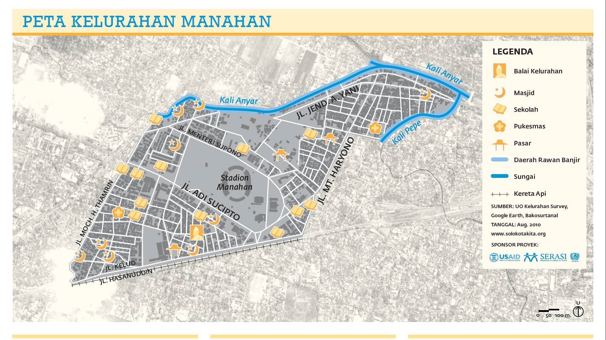

Selamat Datang di Kelurahan Manahan
Geografis Kelurahan Manahan
Luas Kelurahan
Kelurahan Manahan memiliki luas wilayah 28 Ha dan terletak di Kecamatan Banjarsari, Kota Surakarta. Berikut adalah batas wilayah Kelurahan Manahan:
Batas Wilayah
Manahan secara geografis berada antara 110°51’11.17″ sampai 110°45’13.90″ bujur Timur dan 7°27’45.04″ sampai 7°40’4.86″ Lintang Selatan, dengan luas wilayah ± 28 Ha. Manahan dikelilingi oleh:
- Sebelah Utara: Kelurahan Sumber dan Kelurahan Nusukan
- Sebelah Selatan: Kelurahan Purwosari dan Kelurahan Mangkubumen
- Sebelah Timur: Kelurahan Mangkubumen dan Kelurahan Gilingan
- Sebelah Barat: Kelurahan Kerten
Orbitrasi / Jarak Dari Pemerintah Kota
- Jarak dari pusat pemerintahan kecamatan: 4 Km
- Jarak dari pusat kota administratif: 5 Km
- Jarak dari ibu kota / kabupaten: 5 Km
- Jarak dari ibu kota provinsi: 100 Km
Peta Kelurahan Manahan
Manahan terletak di jantung kota, tempat yang nyaman untuk tinggal dan bekerja. Terdapat Stadion Manahan yang termasuk salah satu dari 5 komplek arena olahraga terbesar di Indonesia. Manahan juga pusat pendidikan dari berbagai level.
Sumber: Link
Keadaan Alam
Manahan terletak di dataran rendah pada ketinggian ±100 mdpl. Secara garis besar, Manahan relatif datar dan terdapat dua kali yang mengelilingi Manahan: di sebelah utara ada Kali Anyar, dan di sebelah timur Kali Pepe.
Iklim
Iklim di Kelurahan Manahan sama dengan iklim Surakarta, yaitu monsoon tropis. Memiliki musim hujan yang panjang mulai dari Oktober hingga Juni, dan musim kemarau yang relatif singkat selama tiga bulan tersisa (Juli hingga September). Rata-rata Surakarta menerima curah hujan di bawah 2.200 mm per tahun, dengan bulan paling basah adalah Desember, Januari, dan Februari. Suhu rata-rata Manahan adalah sekitar 30 derajat Celcius setiap bulan.